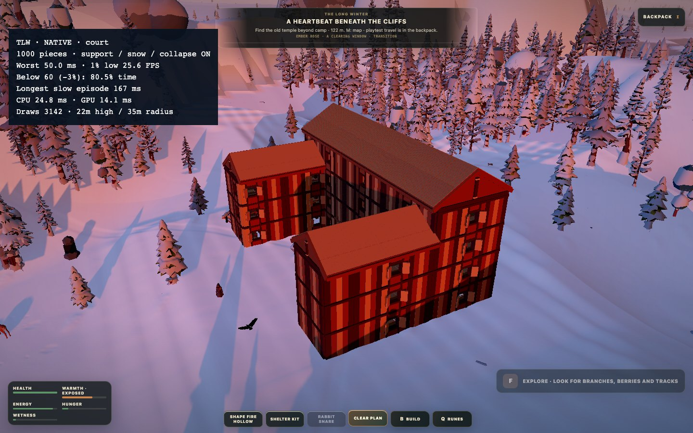
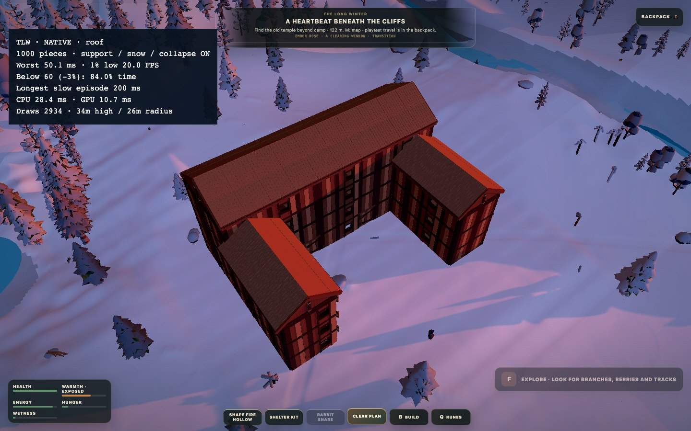
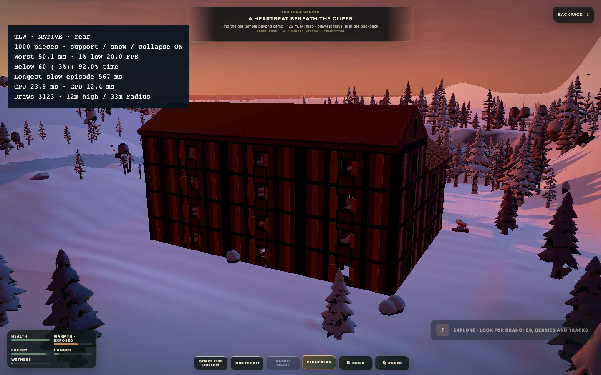
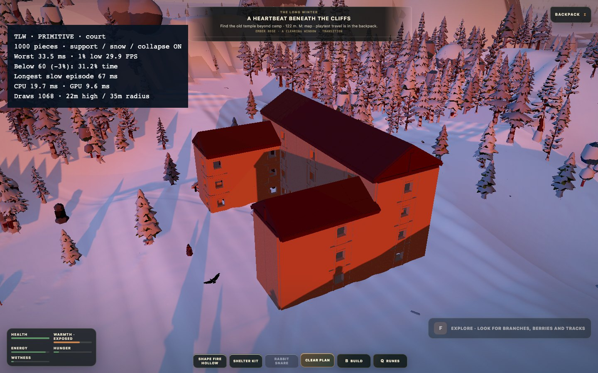
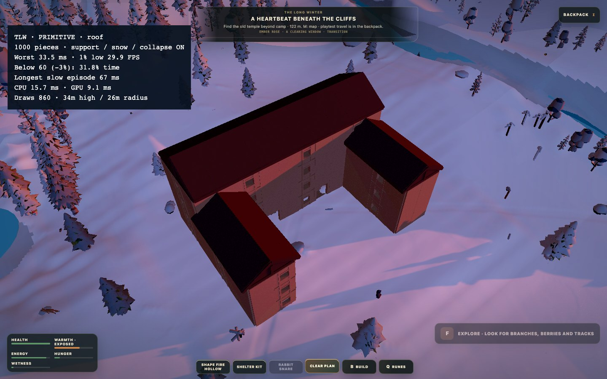
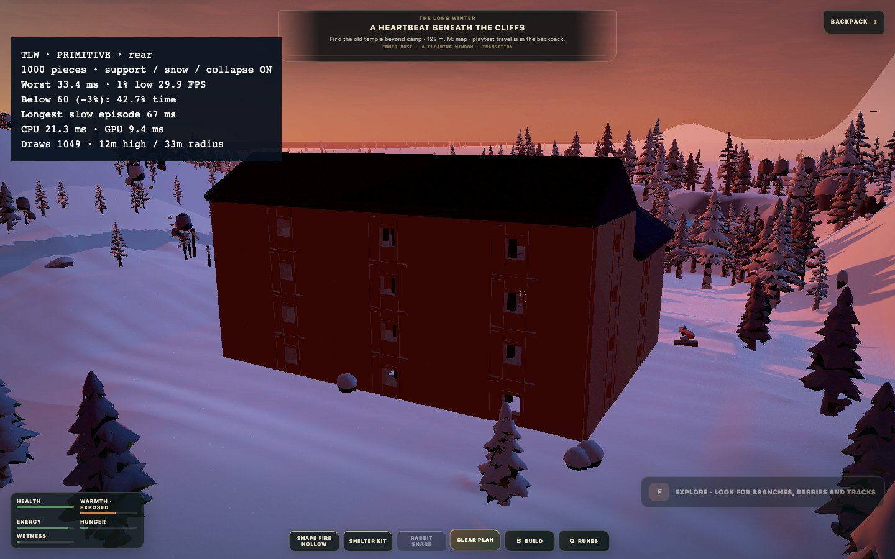

11.9.2026 · kolmen kerroksen sivusiivet, nelikerroksinen pääosa, modulaariset katot ja 86 kalustetta. Sama aiemmin rakennettu tallenne ladattiin molempiin testeihin; tämä ei ole uusi socket-arkkitehtuurinäyte.
Tuki, workerit, pintalumi, sortuminen ja muu maailma ovat nyt mukana molemmissa vaihtoehdoissa. Primitiivit auttavat, mutta vakaan 60 FPS:n hyväksyntä ei vielä täyty. Pelin oletusassetteja ei vaihdettu primitiiveiksi.
Korjaukset: kalusteiden tuen revisiopohjainen välimuisti, eläinten puutörmäysten paikallinen indeksi, staattisten prefabien tarkka geometriayhdistely, kattopaneelien yhteispiirto silloin kun geometria/materialit sopivat, paikallaan olevien osien turhan matriisitraversoinnin ohitus vain renderöinnin ajaksi, lämpöä vailla olevien pintalumipisteiden turhien huonekyselyjen poisto sekä savulähteiden yhteiset huonekyselyt.
Tuoreet erilliset selainprofiilit, samat kamera-asemat ja lähtötallenne; sää ja eläimet etenevät. Vertailu ei ole jäädytetty A/B eikä puhdas kaikkien muutosten yksittäinen vaikutusmittaus. M1 Pro, Chrome headless, 1440 × 900, kehitysversio ja noin 60 Hz:n selainrytmi. Ei 120 FPS:n tai RTX-koneen hyväksyntä.
15 sekuntia / kuvakulma. Alitus on ajalla painotettu, 60 FPS ja erikseen ilmoitettu 3 %:n toleranssi (17,182 ms). Tiukat rajat, 0,1 % low, jaksojen määrät ja raakaruutuajat tiedostoissa. Käynnistys, talon lataus ja kuvakaappaukset eivät kuulu näihin mittausikkunoihin.
| Vaihtoehto | Hitain ruutu | 1 % low FPS | Alitusaika | Pisin alitus | Piirtokutsut p50 |
|---|---|---|---|---|---|
| native · court | 50.0 ms | 25.6 | 80.4 % | 166.7 ms | 3088 |
| native · roof | 50.1 ms | 20.0 | 84.0 % | 200.0 ms | 2991 |
| native · rear | 50.1 ms | 20.0 | 92.0 % | 566.6 ms | 3123 |
| primitive · court | 33.5 ms | 29.9 | 30.9 % | 66.6 ms | 1068 |
| primitive · roof | 33.5 ms | 29.9 | 31.4 % | 66.7 ms | 917 |
| primitive · rear | 33.4 ms | 29.9 | 42.7 % | 66.7 ms | 1049 |
Primitiivit ovat testiadapteri: portaan näkyvä muoto on laatikko ja ovien/ikkunoiden liikkuvat lehdet puuttuvat, vaikka analyyttiset pelisäännöt säilyvät. Tätä ei hyväksytä sellaisenaan valmiiksi pelattavaksi assettisarjaksi. Tässä vertailussa ei poltettu koko taloa; suurpalon suorituskykyä ei ole hyväksytty.
Yhteenveto ja rajaukset · Nykyisten assettien ruutuajat · Primitiivien ruutuajat · Erillinen yksityiskohtainen trace · Aiempi yhteispoistokoe · Peli
CPU p50 26.1 / p95 31.3 ms · GPU p50 10.7 / p95 15.4 ms. Nämä ovat diagnostisia ruutuaikoja, eivät keski-FPS-hyväksyntä.

CPU p50 27.6 / p95 32.4 ms · GPU p50 11.1 / p95 16.1 ms. Nämä ovat diagnostisia ruutuaikoja, eivät keski-FPS-hyväksyntä.

CPU p50 30.1 / p95 34.4 ms · GPU p50 11.9 / p95 14.5 ms. Nämä ovat diagnostisia ruutuaikoja, eivät keski-FPS-hyväksyntä.

CPU p50 18.1 / p95 22.5 ms · GPU p50 9.9 / p95 11.3 ms. Nämä ovat diagnostisia ruutuaikoja, eivät keski-FPS-hyväksyntä.

CPU p50 18.6 / p95 22.9 ms · GPU p50 9.3 / p95 11.1 ms. Nämä ovat diagnostisia ruutuaikoja, eivät keski-FPS-hyväksyntä.

CPU p50 20.3 / p95 24.8 ms · GPU p50 9.4 / p95 11.3 ms. Nämä ovat diagnostisia ruutuaikoja, eivät keski-FPS-hyväksyntä.
